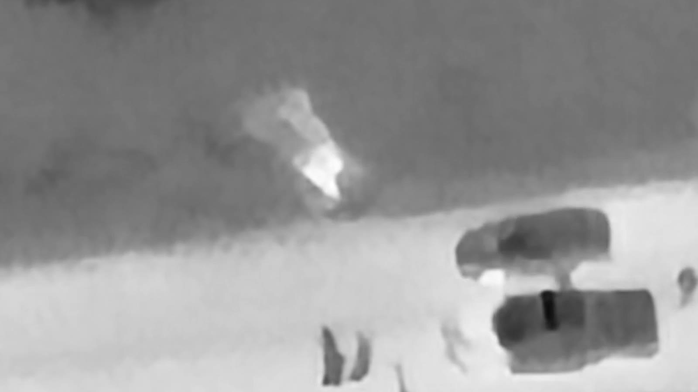
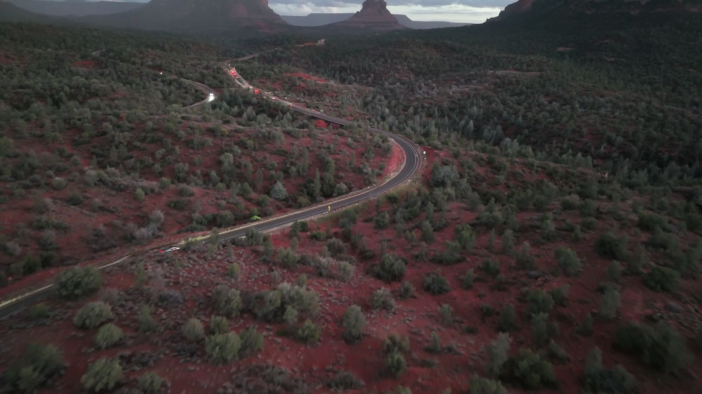
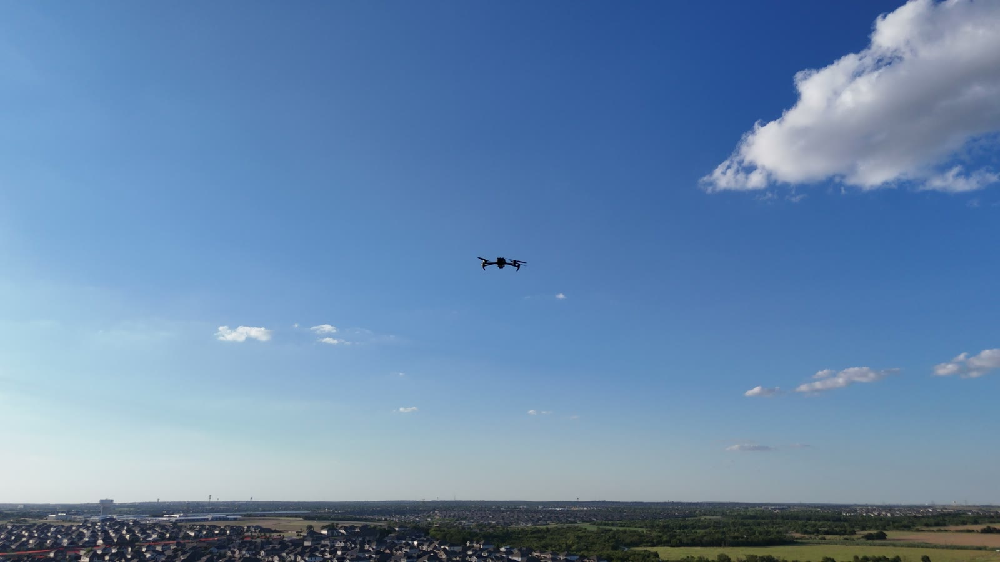
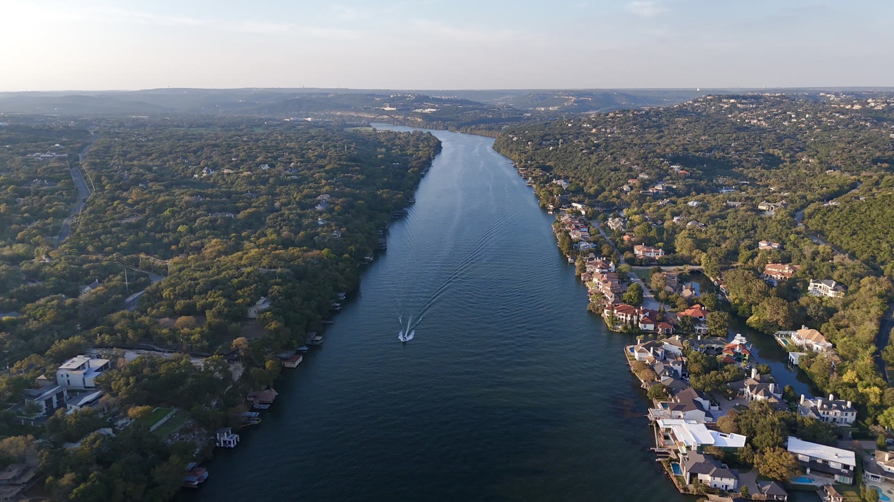
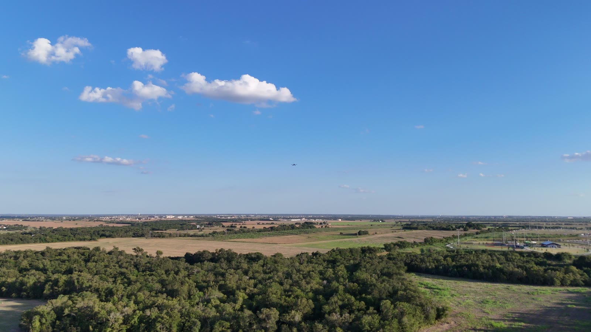
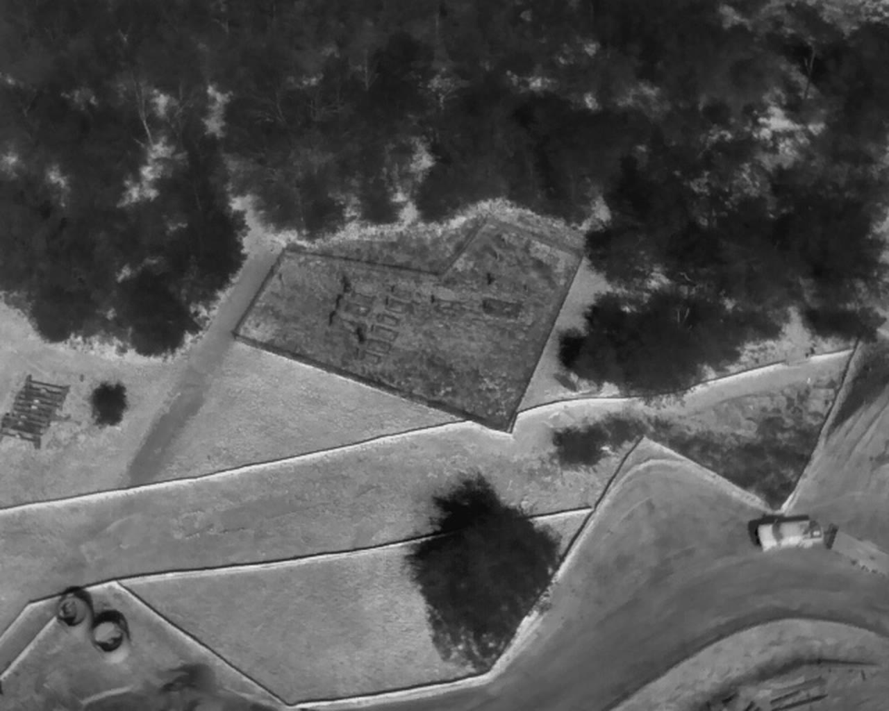

01
Event & VIP operations
Staffed air work for stadiums, campus, private events, and motorcade-adjacent windows when the sit is named. Discrete handling. No social from the pad.
Events · VIP · Named venues
Professional drone work for events and principals. Imaging of the ground. Passive detection of the air. A written risk assessment before the aircraft leaves the box.
Stadium. Campus. VIP and private event. Motorcade-adjacent when the sit is named.
Request a sitFour lines. Named venue. Named window.
01
Staffed air work for stadiums, campus, private events, and motorcade-adjacent windows when the sit is named. Discrete handling. No social from the pad.

02
Stills, video, and thermal when the aircraft brought it. Mapping when the window and airspace allow. The client sees what is on the ground.

03
Passive detection for the named volume. Remote ID and other receive layers when the sit is equipped. This map is broadcasts. It does not show aircraft that are not broadcasting.

04
A written size-up with drone assets: pre-mission matrix, in-window review, close-out. Observations, not a guarantee. Residual risk you accept stays yours.
A common operating picture for the window. Tracks that exist. CLEAR when a layer is empty. Nothing invented to fill the hour.




Simple for the client. Strict for the crew.
No sit without both. You name friendlies and keep-out. VIP principals need not appear in the request if you want the sit held privately.
We image the ground. When the sit is equipped, operators run passive detection and fuse what those sensors can see. We do not jam, spoof, or intercept.
A 360 before launch. A scored matrix. Dynamic review if the scene changes. You receive observations, residuals, and abort criteria — not a green sticker.
Emergency-services method. Walk the 360 before the aircraft leaves the box. Risk a lot to save a lot. Risk nothing to save a highlight reel.
People, airspace, ground hazards, weather, energy (including lithium-ion packs), RF environment, and emergency access. Likelihood times consequence. Empty cells are a no-go. Dynamic assessment when the scene changes. Close-out names what the matrix missed.
This is a planning and liability product. It is not a promise the sit will be safe, and it is not licensed security.
Dark Sky Systems is built for high-stakes venues that need a quiet, competent overhead desk — not theater.
The safety culture comes from emergency services. The founder is a former firefighter and paramedic, and a former Tesla emergency services specialist. That background sits in the size-up, the battery-fire discipline, the accountability on the pad, and the language we use with arriving companies.
Detection stays passive. Imaging stays in the named box. VIP work stays off social.
Name the venue and the window. The button copies a brief you can paste to us. No public inbox on this plate.
Discrete VIP: omit principal names. Describe the sit, not the person.